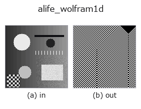

artificial-life op• Data kinds: image → image
• Call: fullseye.apply(img, "alife_wolfram1d", a=0.5, b=0.5) (2-D model = एक image + दो scalar knobs a,b∈[0,1])

*Figure synthetic 128×128 input पर सच में चलाकर मिला output है। बाईं ओर input, दाईं ओर output। Point clouds ऊपर से देखे गए scatter के रूप में (brightness = z), 1-D series line के रूप में, volumes z दिशा में maximum-intensity projection के रूप में, videos बीच के frame के रूप में, complex images amplitude के रूप में, और जो return values चित्र नहीं बन सकते वे स्वयं values के रूप में दिखाए जाते हैं।*
Knob a को बदलकर (0.1 / 0.5 / 0.9, दूसरा knob default पर):
▸ alife_wolfram1d: knob a को बदलने का figure (docs site)
Knob b को बदलकर (0.1 / 0.5 / 0.9, दूसरा knob default पर):
▸ alife_wolfram1d: knob b को बदलने का figure (docs site)
दूसरी images पर भी (synthetic scene / photo / coins। ऊपर की row में inputs, नीचे की row में उनके outputs। Knobs default पर):
▸ alife_wolfram1d: दूसरी images पर output (docs site)
*चौथा column colour (H,W,3) input है। यह op channels को पार किए बिना colour संभालता है (colour channel को तीसरे spatial axis की तरह convolve नहीं करता)।*
Wolfram elementary 1-D cellular automaton, spacetime diagram के रूप में बनाया गया।
> नीचे का विस्तृत विवरण मूल text में है — सारांश और headings का अनुवाद हो चुका है।
Reimplements the elementary (radius-1, two-state) cellular automata of S. Wolfram, Rev. Mod. Phys. 55, 601 (1983) / *A New Kind of Science* (2002). The initial row is the top row of the image thresholded at 0.5; if that row is empty a single central seed is used instead, which is the classical initial condition (rule 90 from a single seed is Pascal's triangle mod 2, i.e. the Sierpinski gasket). The lattice is circular, one generation is written per output row, and row 0 is generation 0, so the output is the H x W {0,1} spacetime diagram.
a picks the rule from the curated table _ELEMENTARY_RULES; b sets the initial density by adding int(b * W/2) evenly spaced extra seed cells to row 0 (b = 0 leaves the thresholded row untouched).
• gallery2d_physics_alife_3d family guide
• Sample data catalog (DL URL / license) — 2-D के लिए skimage.data (BSD/public) + synthetic, 3-D के लिए real data sources (Stanford/PDS आदि) के DL URL।
• Operators का स्रोत और संदर्भ — इस op family के मूल research/methods के स्रोत।
• Algorithm का मानक स्रोत (लेखक, वर्ष) और उपयोग ऊपर की family usage guide में दिए गए हैं।
नीचे का program सच में चलता है, यह जाँचा गया है (figure वाला ही input)। Studio की help में यह block buttons बन जाता है, जिनसे इसे वहीं load करके चलाया जा सकता है।
alife_wolfram1d 0.50 0.50
▸ यह pipeline load करें · Load करके चलाएँ
• gallery2d_physics_alife_3d — py -3.11 examples/gallery2d_physics_alife_3d.py
image को input के रूप में लेते हैं)identity · gaussian · mean_box · bilateral · unsharp · median · min_filter · max_filter
artificial-life)alife_gray_scott · alife_turing · alife_life_step · alife_cyclic_ca · alife_perona_malik · alife_curvature_flow · alife_dla · alife_reaction_bz
*Provenance: ops.py — 2D operator registry. यह per-op note tools/opdocs.py md से अपने-आप generate होता है (हाथ से edit न करें)।*
© 2026 Kazufumi Furuse — Fullseye operator documentation. Licensed under Apache-2.0.